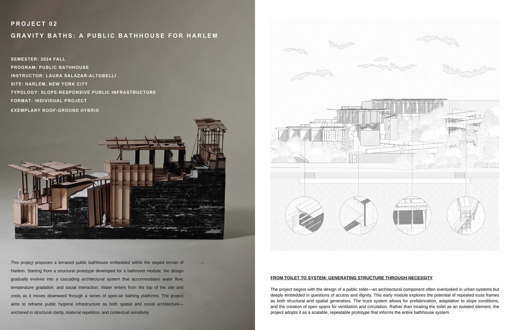
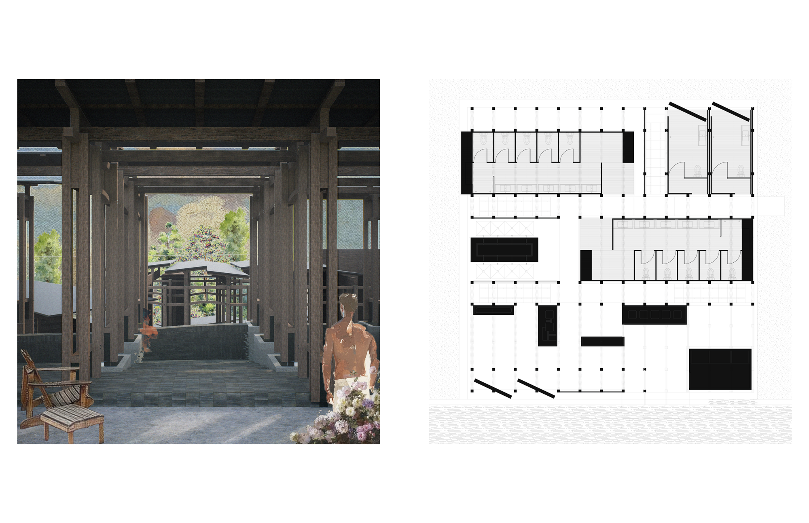
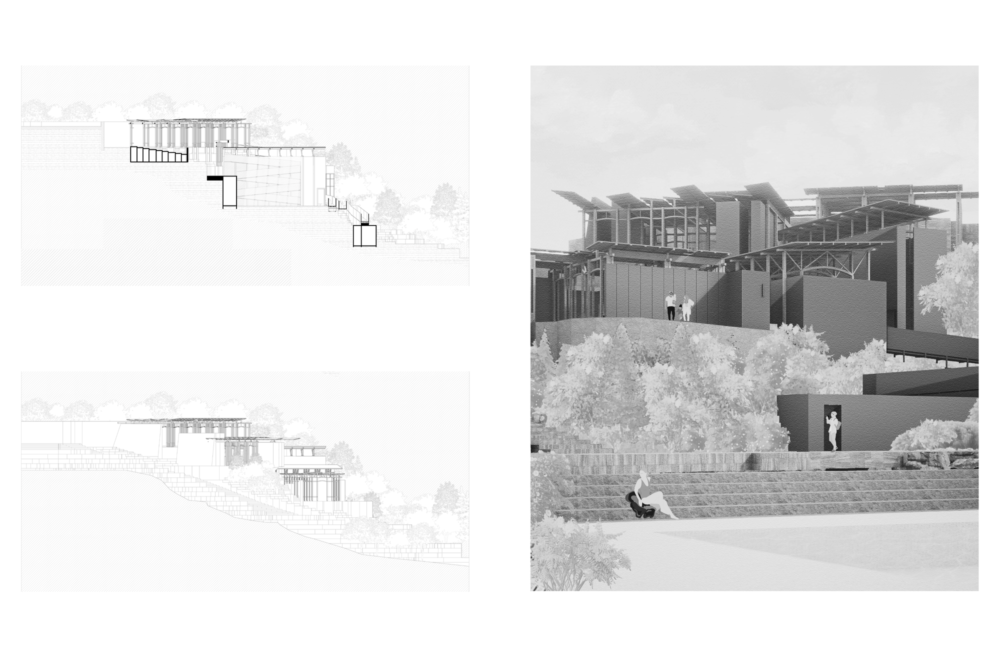
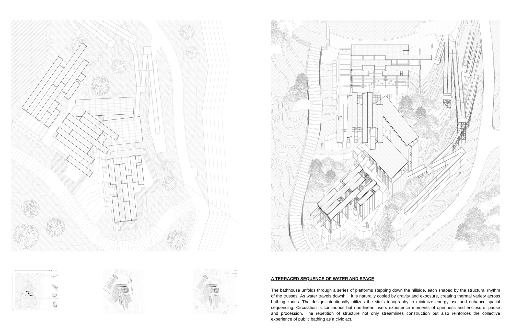

Gravity Baths proposes a terraced public bathhouse embedded within the sloped terrain of Harlem. Starting from a structural prototype developed for a bathroom module, the design gradually evolves into a cascading architectural system that accommodates water flow, temperature gradation, and social interaction. Water enters from the top of the site and moves downward through a series of open-air bathing platforms.
Gravity Baths 是一座嵌入哈林坡地的台地式公共浴场。设计从一个为“洗浴单元”开发的结构原型出发，逐步演化为一套层叠下落的建筑系统，容纳水流、温度梯度与社交互动。水从场地顶部进入，沿着一系列露天沐浴平台向下流动。
The project reframes public hygiene infrastructure as both spatial and social architecture — anchored in structural clarity, material repetition, and contextual sensitivity.
项目将公共卫生基础设施重新诠释为兼具空间性与社会性的建筑——立足于结构的清晰、材料的重复与对场地的敏感回应。



